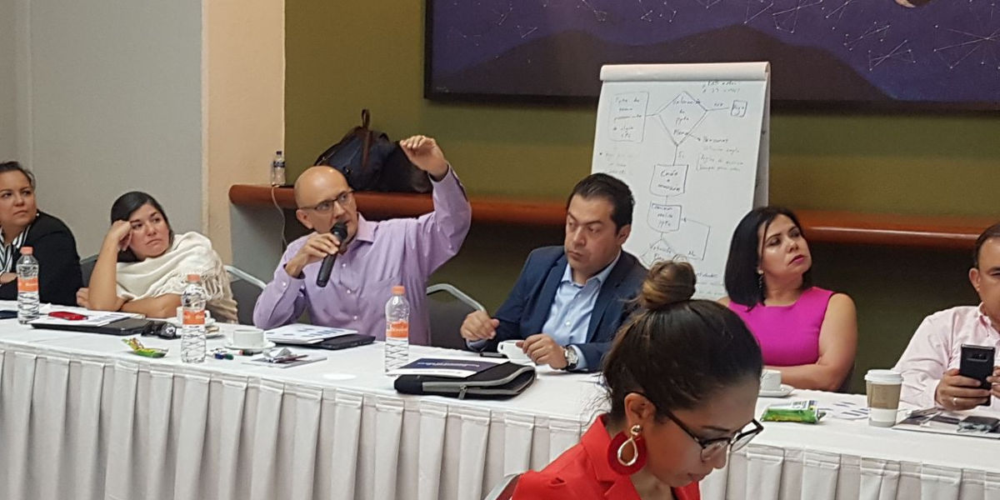

Comunicado de prensa.
Intercambian experiencias integrantes de comités y consejos de participación ciudadana de entidades del país
Sistema Anticorrupción del Estado de Coahuila. Consejo de Participación Ciudadana.
Guadalajara, Jalisco.- Representantes de 12 consejos y comités de Participación Ciudadana de sistemas estatales anticorrupción del país, se reunieron el viernes 27 de abril de 2018, en Guadalajara, Jalisco, donde se acordaron mecanismos de comunicación interna y externa para garantizar una forma coordinada e inmediata de intercambio de información, entre los ciudadanos que forman parte de estos organismos en México.
La importancia de generar rutas de comunicación permanente, tiene su origen en el impulso que los consejos estatales y del Comité Nacional de Participación Ciudadana, buscan dar a temas nacionales o que puedan impactar a los organismos locales en la toma de decisiones para impulsar la consolidación del Sistema Nacional Anticorrupción.

En la sesión de trabajo estuvieron presentes, el consejero nacional, Alfonso Hernández Valdez, quien reconoció los esfuerzos de los integrantes de los comités y consejos locales anticorrupción, para divulgar los avances, las reuniones, convocatorias, planes de trabajo, propuestas y acuerdos a los ciudadanos y la comunidad en los estados.
Además estuvieron coordinando los trabajos de esta jornada en Guadalajara, especialistas en temas anticorrupción y transparencia en México y del “Proyecto Promoviendo la Transparencia en México”, quienes además son contratistas de USAID, como Manuel Silva Coache, Eduardo Flores Trejo, Isidro Cruz Cabrera y Aranzazú Payán López.
Por parte del Consejo de Participación Ciudadana de Coahuila, acudió a este encuentro de la Red Nacional de Comités de Participación Ciudadana, Lourdes de Koster.
